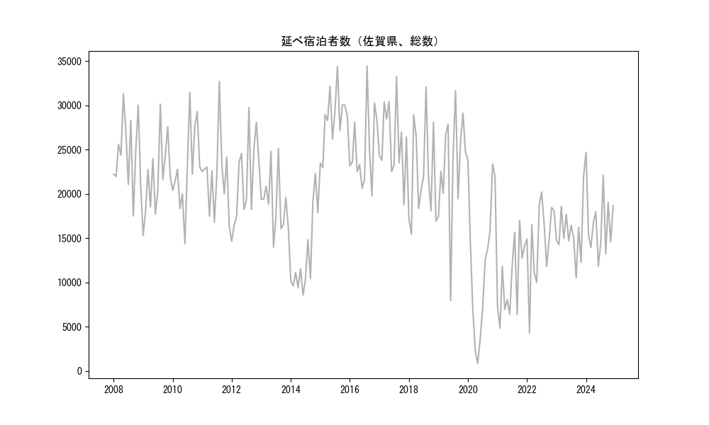

-
トップ
-
佐賀県
佐賀県
１．延べ宿泊者（総数）の推移
時系列グラフ

図１：佐賀県内の従業員数100人以上の宿泊施設での延べ宿泊者数（国外、居住地不詳を含む総数）。
基本統計量
表１：従業員数100人以上の宿泊施設での延べ宿泊者の総数（国外、および居住地不詳を含む）に関する基本統計量。単位は人泊。平均は１か月あたりの平均値を表す。図１に対応。
| 2008年 |
24,600 |
4,086 |
17,509 (9月) |
31,286 (5月) |
| 2009年 |
21,882 |
4,253 |
15,323 (1月) |
30,132 (8月) |
| 2010年 |
22,840 |
4,750 |
14,360 (6月) |
31,496 (8月) |
| 2011年 |
21,987 |
4,327 |
16,357 (12月) |
32,685 (8月) |
| 2012年 |
21,588 |
4,831 |
14,652 (1月) |
29,744 (8月) |
| 2013年 |
19,025 |
3,377 |
13,991 (6月) |
25,124 (8月) |
| 2014年 |
12,949 |
4,498 |
8,574 (6月) |
22,298 (11月) |
| 2015年 |
28,473 |
3,254 |
22,985 (2月) |
34,373 (8月) |
| 2016年 |
25,055 |
4,368 |
19,751 (10月) |
34,451 (8月) |
| 2017年 |
26,000 |
4,096 |
18,766 (11月) |
33,251 (8月) |
| 2018年 |
22,135 |
5,470 |
15,454 (2月) |
32,079 (8月) |
| 2019年 |
23,145 |
6,332 |
7,953 (6月) |
31,657 (8月) |
| 2020年 |
12,220 |
8,139 |
867 (5月) |
23,828 (1月) |
| 2021年 |
10,244 |
4,100 |
4,822 (2月) |
16,979 (10月) |
| 2022年 |
14,621 |
4,584 |
4,281 (2月) |
20,209 (7月) |
| 2023年 |
15,609 |
2,944 |
10,537 (9月) |
21,919 (12月) |
| 2024年 |
16,899 |
3,789 |
11,848 (6月) |
24,704 (1月) |
２．宿泊者数の重心（年平均の推移）
図２：佐賀県内の従業員数100人以上の宿泊施設での延べ宿泊者数（国外、居住地不詳を除く）の重心（年平均の推移）。
全画面表示
重心の前年平均からの移動距離と方位、および緯度・経度
表２：重心の前年平均からの移動距離と方位、および緯度・経度。図２に対応。
| 2008年 |
— |
— |
33.9369 |
132.3965 |
| 2009年 |
東 |
33.6km |
33.9710 |
132.7581 |
| 2010年 |
東北東 |
9.8km |
34.0013 |
132.8574 |
| 2011年 |
東北東 |
24.1km |
34.0601 |
133.1088 |
| 2012年 |
西南西 |
26.1km |
34.0043 |
132.8343 |
| 2013年 |
北 |
5.4km |
34.0519 |
132.8439 |
| 2014年 |
西北西 |
14.8km |
34.0946 |
132.6916 |
| 2015年 |
東 |
77.7km |
34.2173 |
133.5207 |
| 2016年 |
東北東 |
13.4km |
34.2570 |
133.6576 |
| 2017年 |
東北東 |
40.0km |
34.3761 |
134.0673 |
| 2018年 |
西南西 |
55.2km |
34.2193 |
133.4981 |
| 2019年 |
南東 |
3.5km |
34.1999 |
133.5282 |
| 2020年 |
西南西 |
108.3km |
33.8981 |
132.4131 |
| 2021年 |
北 |
2.7km |
33.9227 |
132.4129 |
| 2022年 |
東北東 |
53.4km |
34.0477 |
132.9712 |
| 2023年 |
東北東 |
49.3km |
34.2109 |
133.4679 |
| 2024年 |
東北東 |
14.9km |
34.2584 |
133.6187 |
運輸局別延べ宿泊者数
時系列（年平均）
図３：佐賀県内の従業員数100人以上の宿泊施設での１か月あたり平均延べ宿泊者数（国外、居住地不詳を除く）の運輸局別内訳。
寄与度（前年からの変化率に対する）
 図４：佐賀県内の従業員数100人以上の宿泊施設での運輸局別延べ宿泊者数（国外、居住地不詳を除く）から求めた寄与度。
図４：佐賀県内の従業員数100人以上の宿泊施設での運輸局別延べ宿泊者数（国外、居住地不詳を除く）から求めた寄与度。
３．宿泊者数の重心（月別）
図５：佐賀県内の従業員数100人以上の宿泊施設での延べ宿泊者数（国外、居住地不詳を除く）の重心（月別）。観測期間は2008年1月から2024年12月まで。
全画面表示
全期間（2008年1月～2024年12月）の平均と月別平均の比較
表３：全期間の平均から月別平均までの移動距離と方位、および緯度・経度。図５に対応。
| 全期間 |
— |
— |
34.1016 |
133.0968 |
| 1月 |
西南西 |
59.4km |
33.9354 |
132.4852 |
| 2月 |
東北東 |
18.9km |
34.1557 |
133.2908 |
| 3月 |
東北東 |
20.8km |
34.2034 |
133.2862 |
| 4月 |
北 |
4.5km |
34.1425 |
133.1001 |
| 5月 |
東北東 |
41.2km |
34.2039 |
133.5269 |
| 6月 |
南東 |
2.2km |
34.0875 |
133.1130 |
| 7月 |
西南西 |
40.7km |
33.9570 |
132.6919 |
| 8月 |
西南西 |
76.3km |
33.8126 |
132.3477 |
| 9月 |
東北東 |
17.0km |
34.1666 |
133.2639 |
| 10月 |
東北東 |
42.0km |
34.2597 |
133.5113 |
| 11月 |
東北東 |
58.5km |
34.2894 |
133.6900 |
| 12月 |
西南西 |
24.7km |
34.0059 |
132.8550 |
運輸局別延べ宿泊者数
月別平均（2008年1月～2024年12月）
図６：佐賀県内の従業員数100人以上の宿泊施設での延べ宿泊者数（国外、居住地不詳を除く）の運輸局別内訳（月別）。
寄与度（全期間の平均から月別平均への変化率に対する）
 図７：佐賀県内の従業員数100人以上の宿泊施設での運輸局別延べ宿泊者数（国外、居住地不詳を除く）から求めた寄与度（月別）。
図７：佐賀県内の従業員数100人以上の宿泊施設での運輸局別延べ宿泊者数（国外、居住地不詳を除く）から求めた寄与度（月別）。
４．データのダウンロード
出典：観光庁「宿泊旅行統計調査」に収録された「施設所在地、居住地別延べ宿泊者数（従業員数100人以上の施設）」
国土地理院「白地図（地理院タイル）」（図２と図５）